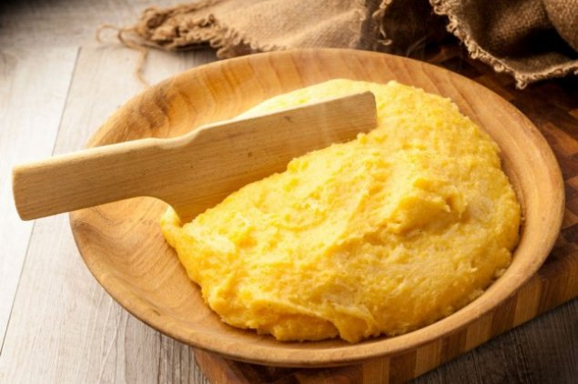
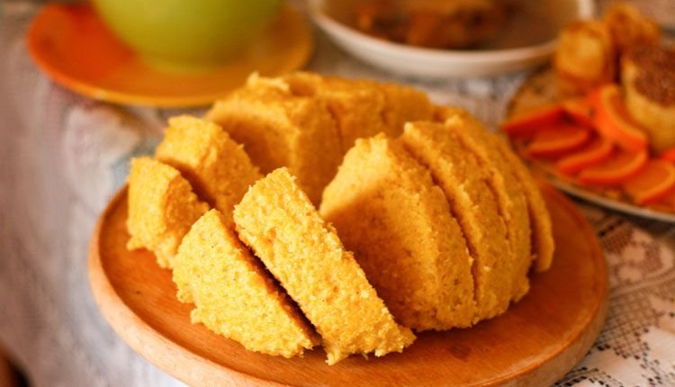
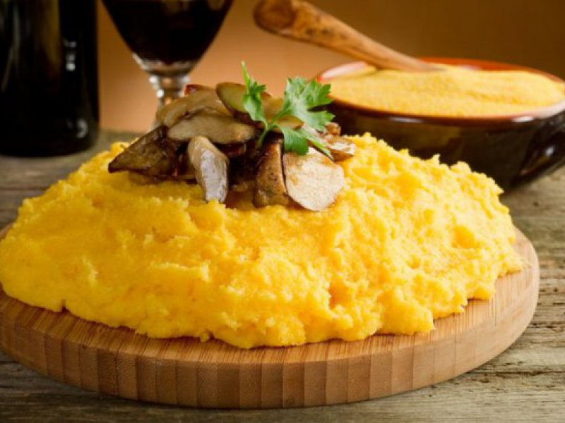

| Mămăliga | ||
| Ingrediente | Mod de preparare | Meniul Principal |

Descrierea:

Mămăliga este un preparat tradițional de mâncare din
România. Considerată mâncare a țăranilor,este des
folosită ca substitut pentru pâine sau ca aliment de
bază în perioadele de vară când munca grea efectuată
la câmp nu mai permite prepararea pâinii de casă și
în zonele rurale sărace. Era preponderent folosită
în perioada premergătoare industrializării dată fiind
ușurința cu care se prepară, comparativ cu pâinea.
În perioada modernă, preocuparea pentru alimentația
diversă și sănătoasă a făcut mămăliga un obiect a
numeroase cercetări, știința alimentației consideră
mămăliga ca având un aport bogat de vitamine, aceasta
fiind recomandată mai ales persoanelor suferinde de boli
de plămâni, afecțiuni ale căilor respiratorii,
anemicilor.
Ingrediente:
-Făină de mălai 1 pahar de 250-300ml -Apă 2 pahare -Sare 0.5 lingurițe(opțional) și 1 lingură de unt
Mod de preparare:
